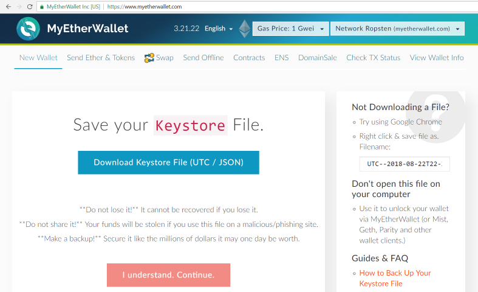

Ethereum Wallet Encryption
To illustrate the application of the AES cipher in action, we shall look into one real-world example: the standard encrypted wallet file format for the Ethereum blockchain. We shall see how AES-128-CTR cipher is combined with Scrypt and MAC to securely implement authenticated symmetric key encryption by text-based password.
Ethereum UTC / JSON Wallets
In public blockchain networks (like Bitcoin and Ethereum) the private keys of the blockchain asset holders are stored in special keystores, called crypto wallets. Typically these crypto-wallets are files on the local hard disk, encrypted by a password.
In the Ethereum blockchain crypto wallets are internally stored in a special encrypted format known as "UTC / JSON Wallet (Keystore File)" or "Web3 Secret Storage Definition". This is the wallet file format, used in geth and Parity (the leading protocol implementations for Ethereum), in MyEtherWallet (popular online client-side Ethereum wallet), in MetaMask (widely used in-browser Ethereum wallet), in the ethers.js and Nethereum libraries and in many other Ethereum-related technologies and tools.
The Ethereum UTC / JSON keystores keep the encrypted private key (or wallet seed words) as JSON text document, specifying the encrypted data, encryption algorithms and their parameters.
UTC / JSON Keystore - Example
Let's look into a sample UTC / JSON keystore file, which holds a password-protected 256-bit private key.
{
"version": 3,
"id": "07a9f767-93c5-4842-9afd-b3b083659f04",
"address": "aef8cad64d29fcc4ed07629b9e896ebc3160a8d0",
"Crypto": {
"ciphertext": "99d0e66c67941a08690e48222a58843ef2481e110969325db7ff5284cd3d3093",
"cipherparams": { "iv": "7d7fabf8dee2e77f0d7e3ff3b965fc23" },
"cipher": "aes-128-ctr",
"kdf": "scrypt",
"kdfparams": {
"dklen": 32,
"salt": "85ad073989d461c72358ccaea3551f7ecb8e672503cb05c2ee80cfb6b922f4d4",
"n": 8192,
"r": 8,
"p": 1
},
"mac": "06dcf1cc4bffe1616fafe94a2a7087fd79df444756bb17c93af588c3ab02a913"
}
}
The above JSON document is a classical example of authenticated symmetric encryption.
What Is Inside the UTC / JSON File?
Typically a UTC / JSON keystore holds the following data:
- Key-derivation function (KDF) used to transform the text-based wallet encryption password into an AES symmetric key, used to encrypt the wallet contents. Usually the KDF function is "scrypt".
- The KDF parameters - the parameters used in the KDF function to derive the password (e.g. iterations count, salt, etc.)
- The ciphertext - the encrypted wallet content (typically holds an encrypted 256-bit private key).
- Symmetric cipher algorithm + its parameters, e.g. AES-128-CTR + initial vector (IV).
- MAC - message authentication code used (MAC) to check the message integrity after it is decrypted (to know whether the wallet decryption password was correct or not).
- Ethereum calculates the MAC by calculating keccak-256 hash of the concatenations of the second-leftmost 16 bytes of the derived key together with the full ciphertext.
- Additional metadata: wallet format version, wallet unique id (uuid) and the blockchain address, controlled by this wallet.
By default the key-derivation function is scrypt and uses weak scrypt parameters (n=8192 cost factor, r=8 block size, p=1 parallelization), so it is recommended to use long and complex passwords to avoid brute-force wallet decryption attacks.
MyEtherWallet: Play with UTC / JSON Keystore Files
To learn better the file format behind the Ethereum UTC / JSON keystore files, play with MyEtherWallet.

Follow the steps below to create a new random Ethereum crypto wallet and view its encrypted JSON content:
- Open the MyEtherWallet web site: https://myetherwallet.com.
- Choose a password and create a new wallet.
- Download the Keystore File (UTC / JSON).
- See what's inside the downloaded file.
- Try to make some changes, try to decrypt it with wrong password and other changes.
- Enjoy learning by playing.